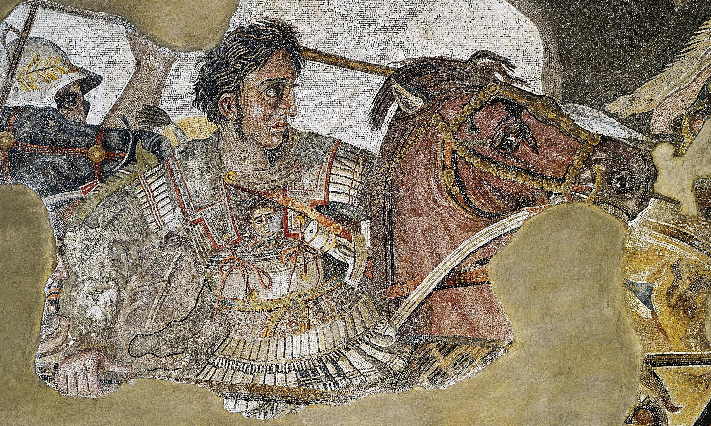
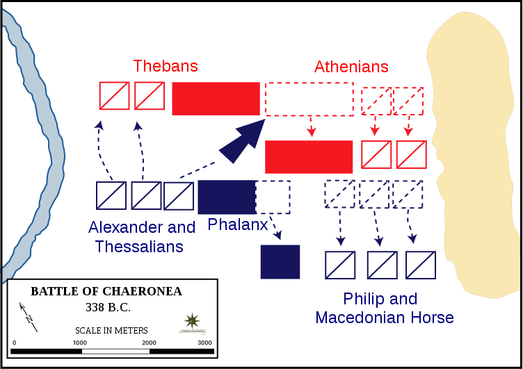

|Büyük İskender Büstü|
“Fethin amacının,fethedilenle aynı şeyi yapmaktan kaçınmak olduğunu bilmiyor musunuz?” -Plutarch-Hayatlar’dan alıntı.
-Büst Üzerine;
MÖ 2.yy’da mermerden yapılmış büst,eski adı Kyme olup şuan İzmir ilinin bir ilçesi olan Aliağa’nın yakınlarında yer almaktadır.
-Büyük İskender’in Askeri Hayatı;
Chaeronea ve İlk Seferleri:
İskender'in askeri mahareti ilk olarak M.Ö. 338'de Chaeronea Savaşı'nda görülmüştür. Sadece 18 yaşında olmasına rağmen, Yunan müttefik şehir devletlerini mağlup eden Makedonya'nın kazanacağı aşikar olan savaşın kaderini değiştirmeye yardım etti. M.Ö. 336'da II. Philip'e suikast düzenlendiğinde İskender tahta geçti ve Chaeronea'nın ardından Makedon yönetimi altında birleşen Yunan şehir devletleriyle, babasının büyük sefer planını gerçekleştirmeye girişti: bu plan güçlü Pers İmparatorluğu'nu fethetmekti.Homeros İskender'in bilgi kaynağıydı ve Aristoteles'in anlatılarını kendisiyle birlikte Asya'ya ulaştırdı... İskender seferleri boyunca, her zaman geçtiği her bölge hakkında her şeyi keşfedebilmekle ilgilenirdi. Botanikten, biyolojiye, zooloji ve meteorolojiden topografyaya kadar bu keşifleri kaydetmek ve analiz etmek için bir grup bilim insanını yanına aldı. İskender'in bir şeyler öğrenme ve olabildiğince bilimsel olarak kaydedilmiş bilgiye sahip olmak isteme arzusu muhtemelen Aristoteles'in öğretilerinden ve gayretinden kaynaklanıyordu.32.000 piyade ve 5.100 süvariden oluşan Makedon ordusuyla MÖ 334'te Küçük Asya'ya geçen İskender, Mayıs ayında Granikos Nehri Muharebesi'nde satrap liderliğindeki Pers ordusunu yenerek Ahameniş İmparatorluğu'nu fethetmeye başladı. Daha sonra aynı yıl Sardis ve Efes şehirlerini Pers yönetiminden "kurtardı" (fethini ifade ettiği gibi) ve daha sonra Küçük Asya'daki bulunan diğer şehirler için yola devam etti. Efes'te, doğduğu gece kundaklanarak yıkılan Artemis Tapınağını yeniden inşa etmeyi teklif etti, ancak şehir bu hoş teklifi reddetti. MÖ 333'te İskender ve birlikleri, İssos Savaşı'nda Pers Kralı III. Darius'un (MÖ 336-330) kendisininkinden daha büyük olan ordusunu yenilgiye uğrattı.

Sur Kenti’nin Fethi ve Seferlerinin Devamı:
İskender, MÖ 332'de Fenike şehirleri Balebek ve Sidon'u (teslim olan) yağmalamaya devam etti ve ardından ada kenti olan Sur antik kentini kuşattı.Sur antik kentini fethetmeye o kadar kararlıydı ki, mancınıklarını(6.fotoğraf) monte etmek için anakaradan adaya bir geçit inşa etti.(7.fotoğraf) Bu geçit zamanla kum ve toprak topladı ve bu, Sur antik kentinin bugün Lübnan'daki anakaranın bir parçası olmasının sebebidir.(8.fotoğraf) Azimli direnişlerinden dolayı şehir sakinleri katledildi ve hayatta kalanlar köle olarak satıldı. Sur vatandaşlarıyla ilgili politikası, eski ve modern tarihçiler tarafından acımasızlığının en önemli örneği olarak gösteriliyor.MÖ 331'de Mısır'ı fethetti ve burada İskenderiye şehrini kurdu. Siwa'nın Kahininde, aynı adı taşıyan Mısır vahasında, tanrı Zeus-Ammon'un oğlu ilan edildi.Mısır'ı fethetmiş olmasına rağmen birliklerini beslemek ve donatmak için tedarik hatlarını isteyerek açık tuttukları sürece, kendi hakikat, din veya davranış fikirlerini insanlara dayatmakta ısrarcı değildi. (kendinden sonra gelenlerin yapmayı ihmal ettiği, geniş alanlara hükmetme yeteneğinin önemli bir yönüdür.) Ancak bu, ayaklanmaları acımasızca bastırmadığı veya kendisine karşı çıkanları şiddetle yok etmekte tereddüt etmediği anlamına gelmez. İskenderiye kentinin planını tasarladıktan sonra İran üzerine daha fazla sefer yürütmek için Mısır'dan Suriye ve kuzey Mezopotamya'ya doğru yola çıktı.


-Büstün bulunduğu Kyme kenti;
Kyme,Antik Çağ'da Aiolis denilen bölgedeki Aiol ( Antik Yunanistan yaşamış başlıca 4 Yunan kavminden (Akalar, Dorlar ve İyonlar) biri) kentlerinden biridir.Günümüzde Türkiye’nin İzmir İli Aliağa ilçesi yakınlarında yer almakta olup kıyısında bulunduğu küçük körfez, Nemrut Körfezi olarak adlandırılmaktadır. Geçmiş yıllarda yapılan araştırmalarda yerleşimin tarihi MÖ 8. yüzyıl ortalarına kadar uzatılabilse de yakın zamanda yapılan kazılar sonucunda antik yerleşimin kuruluşu Protogeometrik Dönem'e (MÖ 1050-900) tarihlenebilmektedir. Antik kentin kuruluşuyla ilgili olarak efsaneyle karışık çeşitli görüşler bulunmaktadır. Strabon'a göre şehrin adı Amazon Kyme'den gelmekte olup şehirde basılan sikkelerde de kurucusuna atfen Kyme'nin yüzü tasvir edilmiştir.Yine Strabon’a göre yerleşim, Orta Yunanistan halkı Lokrisliler'in Truva Savaşı’ndan sonra Gediz Nehri yakınlarındaki Pelasglar’a ait Larissa (Aiolis) kalesini ele geçirmelerinin ardından kurulmuştur.Bunun yanı sıra şehrin, civar Aiol yerleşimlerinden yola çıkarak günümüz Yunanistan’ının orta kuzeyinde yaşayan Aiol kolonicilerin MÖ 11. yüzyıl ortalarında yerleşimiyle kurulduğu düşünülmektedir ki bu nedenle yerleşimden eski kaynaklarda Aiolis adıyla da bahsedilmektedir. Yerleşim MÖ 7. yüzyıla kadar krallıkla yönetilirken bu yüzyıldan itibaren zengin aristokrat sınıf tarafından, Ahameniş İmparatorluğu Anadolu topraklarını ele geçirdikten sonra da onların atadıkları tiranlar (valiler) tarafından yönetilmeye başlandı.Ahamenişler'in deniz üslerinden biri olan Kyme, MÖ 480’de yaşanan Salamis Deniz Muharebesi sonrasında arta kalan Pers filosunun limanına sığınması ve askerlerin de şehirde kışlaması nedeniyle önemli bir konumdaydı.Seleukos İmparatoru III. Antiohos’un Roma Cumhuriyeti MÖ 190’da Magnesia Muharebesinde aldığı yenilgi ve sonrasında da MÖ 188’de yapılan Apamea Antlaşması ile vergiden muaf hale gelen yerleşim, daha sonra da Roma’nın Asya Eyaletine katıldı.Helenistik Dönemde kentin limanı genişletilirken, kentte de tiyatro, sütunlu geçiş yapıları, anıtlar ve Güney Tepe olarak belirlenen mıntıkada yeni yerleşim alanı yapılmıştır ve bölge 1415'de Osmanlı güçlerince ele geçirildi.
İskender’in askeri maharetinin ilk görüldüğü savaş Chaeronea (5.fotoğraf);
MÖ 340 ve 339'da Perinthus ve Bizans'ın başarısız kuşatmalarının ardından, II. Philip, Yunan şehir devletleri üzerindeki etkisinin azaldığını gördü. Makedon üstünlüğünü yeniden tesis etmek için,MÖ 338'de güneye yürüdü.Ordusunu oluşturan Philip'e müttefik birlikler katıldı. İlerleyen birlikleri, güneydeki dağ geçitlerini kontrol eden Elateia kasabasını kolayca güvence altına aldı. Elateia'nın düşüşüyle birlikte, haberciler Atina'yı yaklaşan tehdide karşı uyardı.İki şehir arasındaki geçmiş düşmanlıklara ve kötü niyete rağmen Demosthenes, Boiotialıları Philip'in yarattığı tehlikenin tüm Yunanistan için bir tehdit olduğuna ikna edebildi. Philip ayrıca Boiotialıları etkilemeye çalışsa da, onlar Atinalılara katılmayı seçtiler. Güçlerini birleştirerek Boeotia'daki Chaeronea yakınlarında bir pozisyon aldılar. Savaş için kurulan Atinalılar solu işgal ederken, Thebans sağdaydı. Süvari her kanadı korudu.2 Ağustos'ta düşman pozisyonuna yaklaşan Philip, ordusunu merkezde falanks piyade ve her kanatta süvari ile konuşlandırdı. Sağa bizzat önderlik ederken, solun komutasını en iyi Makedon generallerinden bazılarının yardım ettiği küçük oğlu İskender'e verdi. O sabah temas kurmaya ilerleyen Atinalı Chares ve Boeotialı Theagenes liderliğindeki Yunan kuvvetleri sert bir direniş gösterdi ve savaş çıkmaza girdi. Kayıplar artmaya başladığında, Philip bir avantaj elde etmeye çalıştı.Atinalıların nispeten eğitimsiz olduklarını bilerek, ordunun kanadını geri çekmeye başladı. Bir zaferin yakın olduğuna inanan Atinalılar, kendilerini müttefiklerinden ayırarak izlediler.Philip saldırıya geri döndü ve kıdemli birlikleri Atinalıları sahadan sürmeyi başardı. İlerleyen, adamları İskender'e Thebans'a saldırmak için katıldı. Sayıca çok az olan Thebans, 300 kişilik elit Kutsal Bandosu tarafından demirlenen sert bir savunma sundu.Çoğu kaynak, İskender'in "cesur bir grup" adamların başında düşmanın hatlarına giren ilk kişi olduğunu belirtir. Thebans'ı kesen birlikleri, düşman hattını parçalamada önemli bir rol oynadı. Bunalmış, kalan Thebans sahadan kaçmak zorunda kaldı.

KAYNAKLAR://www.worldhistory.org/trans/tr/1-265/buyuk-iskender/
2-https://tr.wikipedia.org/wiki/Kyme
3-https://en.wikipedia.org/wiki/Siege_of_Tyre_%28332_BC%29
4- https://alexandrei0n.wordpress.com/2018/10/08/siege-of-tyre/
5- https://en.wikiquote.org/wiki/Alexander_the_Great#:~:text=An%20army%20composed%20of%20sheep,lions%20led%20by%20a%20sheep.&text=Greater%20is%20an%20army%20of,lions%20led%20by%20a%20sheep.&text=I%20am%20more%20afraid%20of,lions%20led%20by%20a%20sheep.
6- https://www.thoughtco.com/alexander-the-great-battle-of-chaeronea-2360874
FOTOĞRAFAR:1-5.@kantmansarp
6. https://en.wikipedia.org/wiki/Battle_of_Chaeronea_%28338_BC%29
7. Ancient Siege Warfare -Duncan B. Campbell
8.The Department of History, United States Military Academy -Frank Martini
9. https://alexandrei0n.wordpress.com/2018/10/08/siege-of-tyre/
*Büyük İskender – II
*Bundan sonraki Büyük İskender paylaşımlarında askeri hayatı,detayına girilmeyen savaşlar,halefleri,meşhur atı Bukefalos ve diğer tarihi kişiliklerle olan ilişkileri yer alıcak.